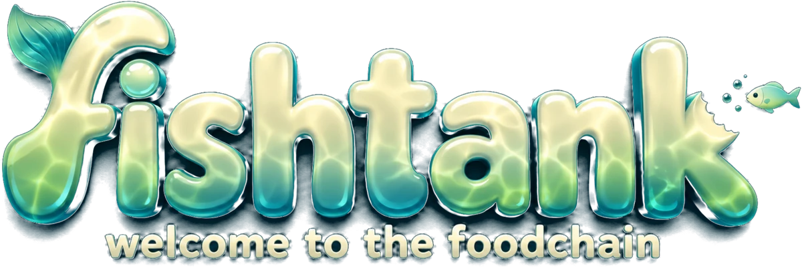

Your fish · drag to turn

Your name
Pick your fish
‹
›
Dive in
↗
Join game
→
W
S
forward / back
A
D
strafe
/
Mouse to aim · Click to capture · Esc for menu
Left thumb pushes to swim, let go to stop
/
drag the right half to look
/
you swim where you look
…
MASS
8.0
SCORE
0
ROUND
5:00
JOIN A GAME
Game code
Join
→
Undo
Back
Waiting for the shoal
SHARE THIS CODE
Copy the code
MATCH LENGTH ·
2 min
DIFFICULTY ·
Open water
I'm ready
Start the game
→
Leave
Start a new game
→
Leave
FISHTANK
GRAPHICS
Continue
Leave fish tank
PUSH TO SWIM · LET GO TO STOP
DRAG TO LOOK · YOU SWIM WHERE YOU LOOK
Turn your phone sideways
Fishtank swims in landscape only.
Or play fullscreen
→